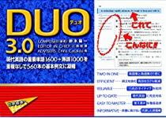

まず偏差値を上げるには何から始めればいいのか
結論から述べると、まず初めに取り組んでほしいのは英単語です。英語を勉強するにおいて、最も重要なことが単語を理解しているかどうかです。
単語を知らないまま、文法や長文を解いても意味が理解できず、時間を無駄にしてしまいます。そういった点でも単語の勉強がいかに重要かがわかるはずです。
単語帳編
まずは英単語です。英単語をまだ覚えていない人やどのレベルの英単語を使えばいいのかわからない人は、以下を参考にしてください

表紙のデザインもおしゃれになり、とてもつかいやすそうなレイアウトです。また、頻出単語が難易度準で出てくるので初心者の方にもおすすめできる一冊です。

こちらも長年受験生に愛されてきている「DUO3.0」。かれこれ20年間もの間、多くの受験生を合格へと導いてきました。単語帳と熟語帳が一冊になっているので、単語と熟語を同時に覚えたいという方におすすめです。
中には、2500語程度の見出し語と360個もの例文が含まれています。duo3.0の最大の特徴としては、別で売っているリスニングＣＤと合わせるととても効率的に覚えることです。
リスニングＣＤは360個の例文がただひたすらに流れるもので、リスニングの速さはかなり速く、1周1時間で終わります。よって、ＣＤの速さで聞き取ることができると、1時間で単語帳を1周できることになります。
テストの前の1時間ＣＤを聞くことで単語帳を丸々復讐できるという点でとても優れている単語帳です。リスニング力が鍛えられるので共通テスト対策にもなります。
ですが、シス単とは違い初めから難しい単語も出てくることがあるのでまだ単語を全く覚えてない方は注意が必要です。
この「速読英単語」の特徴としては長文の中に覚えるべき単語が入り混じっているので長文の勉強もしながら単語の勉強もできる一冊です。
含まれている単語は難しいものが多く、この本を取り組む前に一冊の単語帳を完成させてから使うことをお勧めします。
上に紹介した「duo3.0」と同様にリスニングCDが別で売っているので、ぜひそれも併せて使用してほしいところです。
この参考書が完璧になると受験で必要な単語はほとんどマスターしたといえるでしょう。